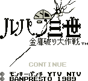

Lupin 3rd - Gameboy Games

- Company: Banpresto
- Genre: Puzzle game
Controls
- A button: Jump
- B button: Raise Floor/Lower Floor
- Start: Pause
- Select: Item Inventory
You guide Lupin to find the treasure on the level.
You must avoid Zenigata and other enemies; along the way you can find help
from Jigen and Goemon.
Anime Video Game Resource Center © 1998 by Luis A. Cruz